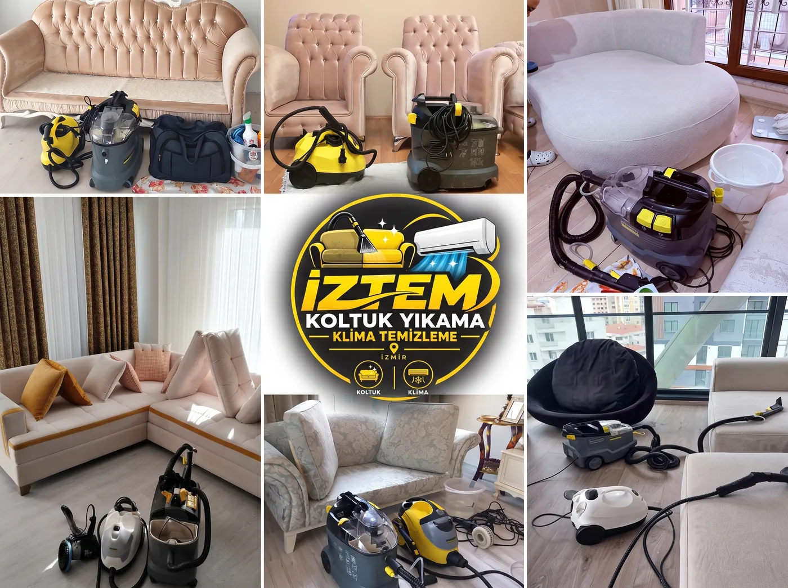
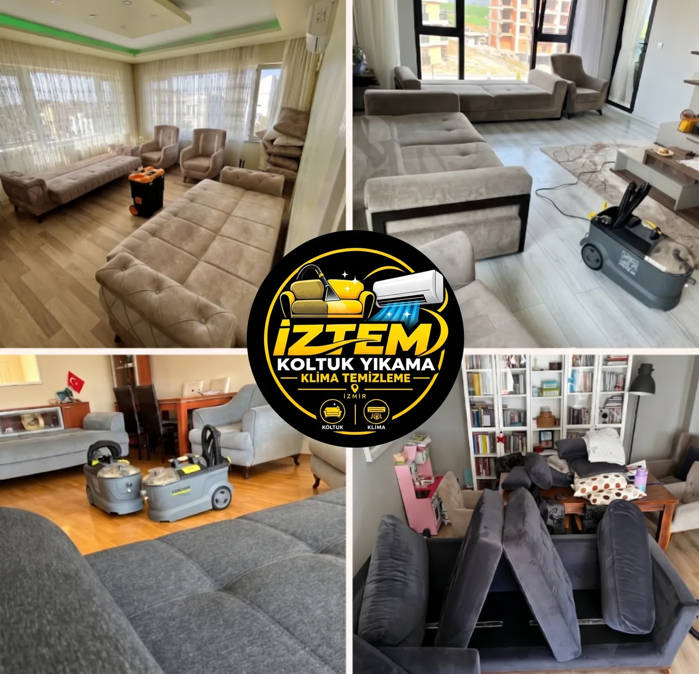
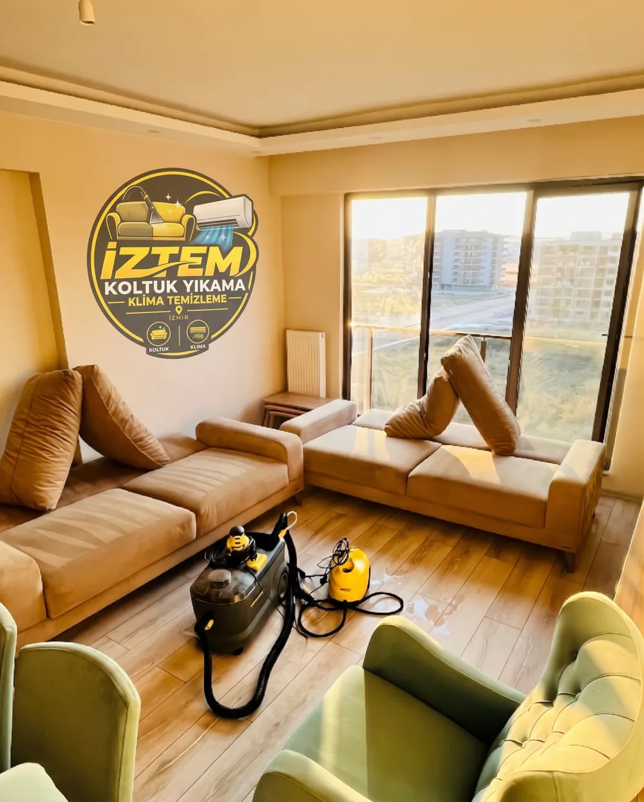
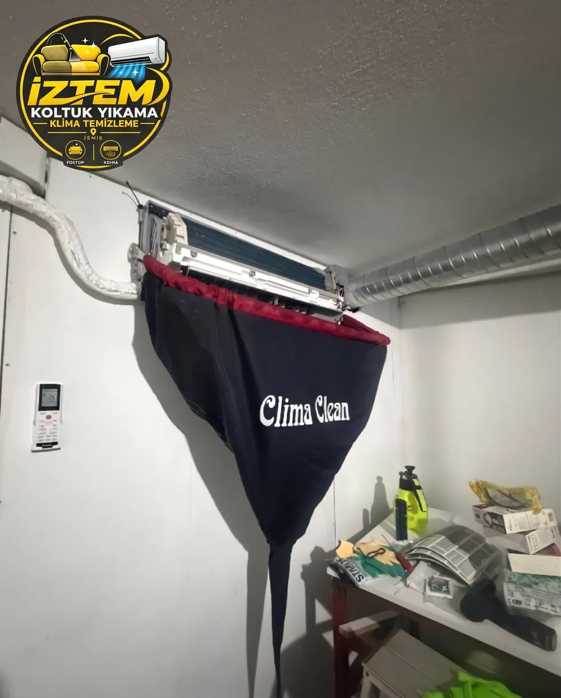
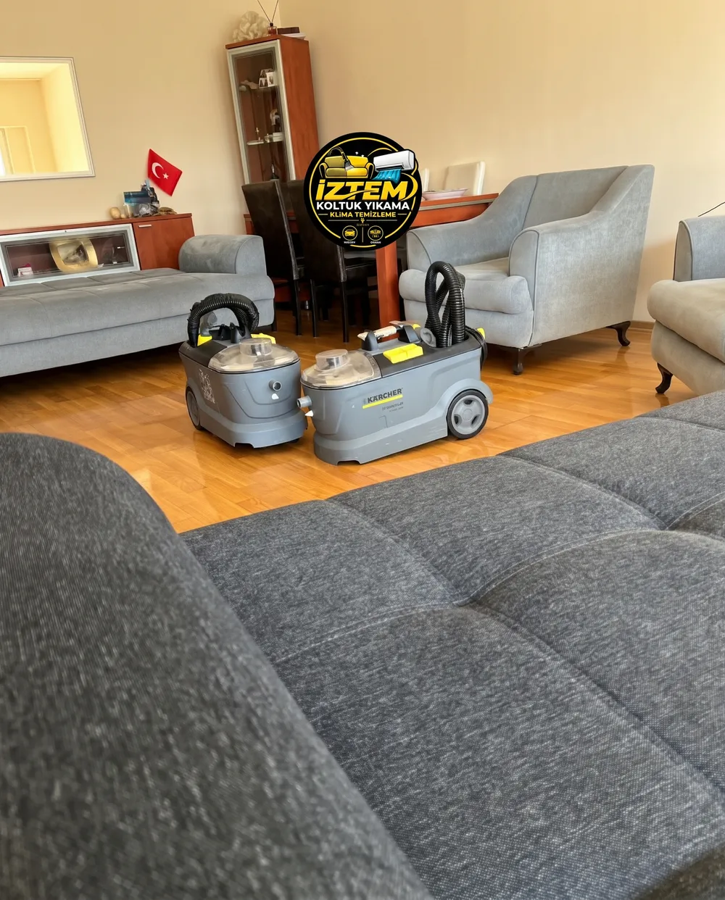
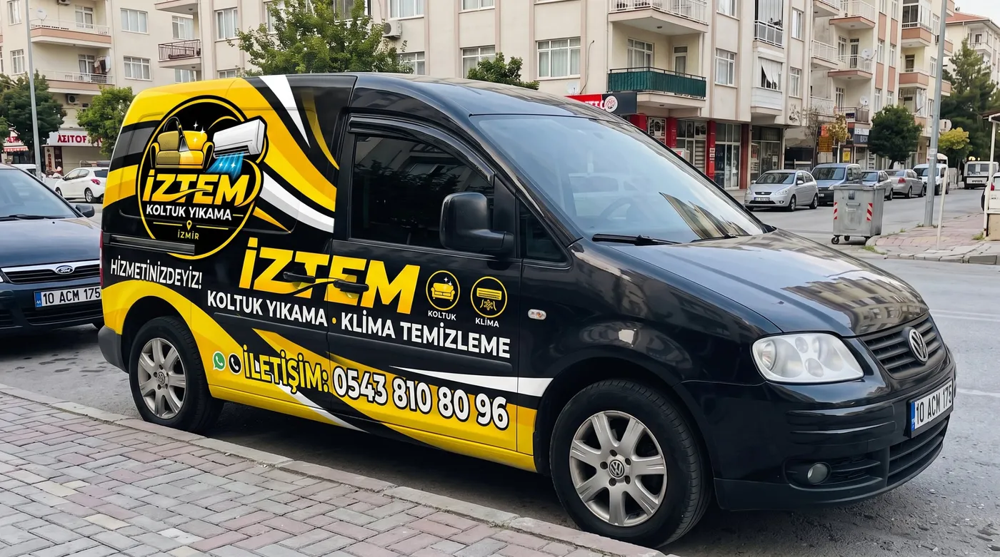
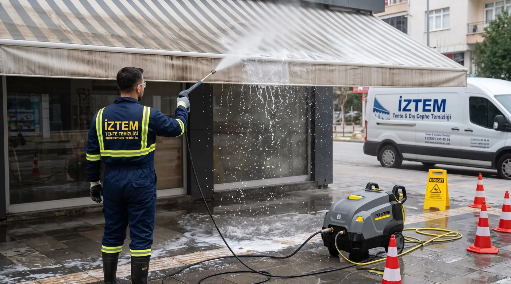

İzmir Çiğli Koltuk Yıkama ve Klima Temizliği
Koltuklarınızı evinizden çıkarmadan, yerinde yıkıyoruz. İZTEM; Çiğli, Menemen ve Karşıyaka'da koltuk takımı, L koltuk, kanepe, çekyat, berjer, sandalye ve yatak temizliği ile klima temizliği yapar.
- 2012'den beri
- Her gün 08:00–22:00
- Evde yerinde yıkama
- Online tahmini ücret

İZTEM nedir?
İZTEM, İzmir Çiğli merkezli bir koltuk yıkama ve klima temizliği hizmetidir. Çiğli, Menemen ve Karşıyaka'da evlere ve iş yerlerine gelir; koltukları bulunduğu yerde profesyonel makineyle yıkar, klimaların filtre ve iç ünitelerini temizler. Hizmet randevuyla, haftanın 7 günü 08:00–22:00 arasında verilir. İletişim: 0543 810 80 96.
Koltuklarınızda oluşan lekelerden ve günlük kullanıma bağlı kirlerden kurtulmak mı istiyorsunuz? Profesyonel yıkama ekipmanlarımız ve kumaşa uygun yöntemlerimizle koltuklarınıza daha temiz ve bakımlı bir görünüm kazandırmayı hedefliyoruz. İzmir koltuk yıkama rehberimizi ve İzmir klima temizleme rehberimizi okuyabilirsiniz.
Koltuk yıkamayı kumaşın yapısına, klima temizliğini cihazın türüne göre yaparız. Fiyatlar koltuk sayısına, kumaşa ve kir durumuna göre değiştiği için önce online tahmini ücret veriyoruz.
Hizmetlerimiz
Koltuk Yıkama
İzmir Çiğli, Menemen ve Karşıyaka'da evinizde yerinde koltuk yıkama. Profesyonel makine, kumaşa uygu…
L Koltuk Yıkama
L koltuk ve köşe koltuk yıkama: oturma, sırt ve köşe bölümleri yerinde, profesyonel makineyle temizl…
Kanepe Yıkama
Kanepelerinizi evinizden taşımadan yerinde yıkıyoruz. Kumaşa uygun ürünler ve profesyonel yıkama mak…
Çekyat Yıkama
Çekyat oturma ve sırt yüzeylerini profesyonel ekipmanla evinizde yıkıyoruz. İzmir Çiğli, Menemen, Ka…
Berjer Yıkama
Berjer ve tekli koltuklarda biriken toz, kir ve lekeleri kumaşa uygun temizliyoruz. Çiğli, Menemen, …
Sandalye Yıkama
Kumaş kaplı sandalye ve yemek masası sandalyelerinde yemek lekesi, toz ve kullanım kirlerini yerinde…
Yatak Temizliği
Yatak yüzeyindeki toz, kir ve temizlenebilen lekeleri profesyonel ekipmanla evinizde temizliyoruz. Ç…
Koltuk Leke Çıkarma
Koltuklardaki çay, kahve, yiyecek ve günlük kullanım lekeleri için kumaşa uygun leke çıkarma. İzmir …
Klima Temizliği
Çiğli, Menemen ve Karşıyaka'da klima temizliği: filtre ve iç ünite temizliği, kötü koku giderme. Tel…
Petek Temizleme
Peteğin alt kısmı soğuk kalıyorsa makineli petek temizliği yapıyoruz. Kalorifer tesisatındaki biriki…
Tente Temizliği
Tente yüzeyindeki toz, çevresel kir ve temizlenebilen lekeleri kumaşa uygun yöntemle temizliyoruz. Ç…
Ev, Ofis ve Taşınma Temizliği
Ofis ve iş yeri, taşınma, kiracı sonrası ev, pencere ve zemin temizliği. İzmir Çiğli ve çevresinde r…
Nasıl çalışır?
1. Yazın veya arayın
Koltuk/klima sayısını ve fotoğrafı WhatsApp'tan gönderin.
2. Tahmini ücret
Online tahmini ücreti ve randevu saatini bildiririz.
3. Yerinde yıkama
Makinelerimizle adresinize gelir, taşımadan yıkarız.
4. Kontrol ve teslim
İşlem sonrası birlikte kontrol ederiz.
Neden İZTEM?
- Koltuklarınız evinizden çıkmaz; yerinde yıkama yapılır.
- Kumaş türü ve leke durumuna göre yöntem seçilir.
- Randevuya söz verilen saatte gelmeye özen gösteririz.
- Etrafı kirletmemeye dikkat ederiz.
- Her gün 08:00–22:00 hizmet; telefon ve WhatsApp ile kolay randevu.
- Lekelerde sonucu baştan dürüstçe söyleriz; her lekenin çıkması garanti edilemez.
İşlerimizden kareler






Müşteri yorumları
“Koltuklarım ve sandalyelerim ilk günkü gibi tertemiz oldu. İşini özenle yapıyor, gönül rahatlığıyla tavsiye ederim.”Tayfun Ç. · Google yorumu
“Salon koltuklarımı yıkattım; 2 yıkamacının çıkaramadığı lekeleri çıkardı. Güvenilir, samimi ve güler yüzlü.”Ahmet K. · Google yorumu
“Koltuk yıkama ve klima temizleme için aradık, Çiğli'deki adresimize söz verdikleri saatte geldiler. Koltuklar pırıl pırıl oldu, klimanın kötü kokusu bitti.”Msa E. · Google yorumu
“3 adet klima bakımı temizliği yaptırdık; içinden çıkanlar kapkaraydı. Hızlı ve temiz işçilikti.”Ahmet S. · Google yorumu
“Saatinde geldiler, süper yıkadılar, etrafı da kirletmediler.”Hakkı E. · Google yorumu
“Çiğli'de koltuklarımızı yıkattık; oturma yerlerindeki lekeler güzelce çıktı. Evdeki kötü koku da azaldı.”Kadir C. · Google yorumu
Sık sorulan sorular
İZTEM nedir, ne iş yapar?
İZTEM, İzmir Çiğli merkezli, Çiğli, Menemen ve Karşıyaka'da evde ve iş yerinde koltuk yıkama ile klima temizliği yapan bir temizlik hizmetidir. 2012'den beri faaliyet göstermektedir.
İzmir'de evde koltuk yıkama yapan firma var mı?
Evet. İZTEM, koltuklarınızı evinizden taşımadan, bulunduğu yerde profesyonel yıkama makinesiyle yıkar. Randevu için 0543 810 80 96.
Hangi bölgelere hizmet veriyorsunuz?
Çiğli, Menemen ve Karşıyaka; Evka-2, Evka-5, Egekent, Villakent, Ulukent, 9 Eylül, Seyrek, Bostanlı ve Mavişehir mahalleleri.
Çalışma saatleriniz nedir?
Haftanın 7 günü 08:00–22:00. Randevu gereklidir.
Fiyat bilgisini nasıl alabilirim?
Telefon veya WhatsApp üzerinden koltuk veya klima sayısı ile kumaşı yazın, mümkünse fotoğraf gönderin. Online tahmini ücret iletiriz.
Randevu gerekli mi?
Evet. Telefon (0543 810 80 96) veya WhatsApp üzerinden randevu alınır.
Randevu ve tahmini ücret için yazın veya arayın
Koltuk veya klima sayısını ve fotoğrafı gönderin, online tahmini ücreti iletelim.